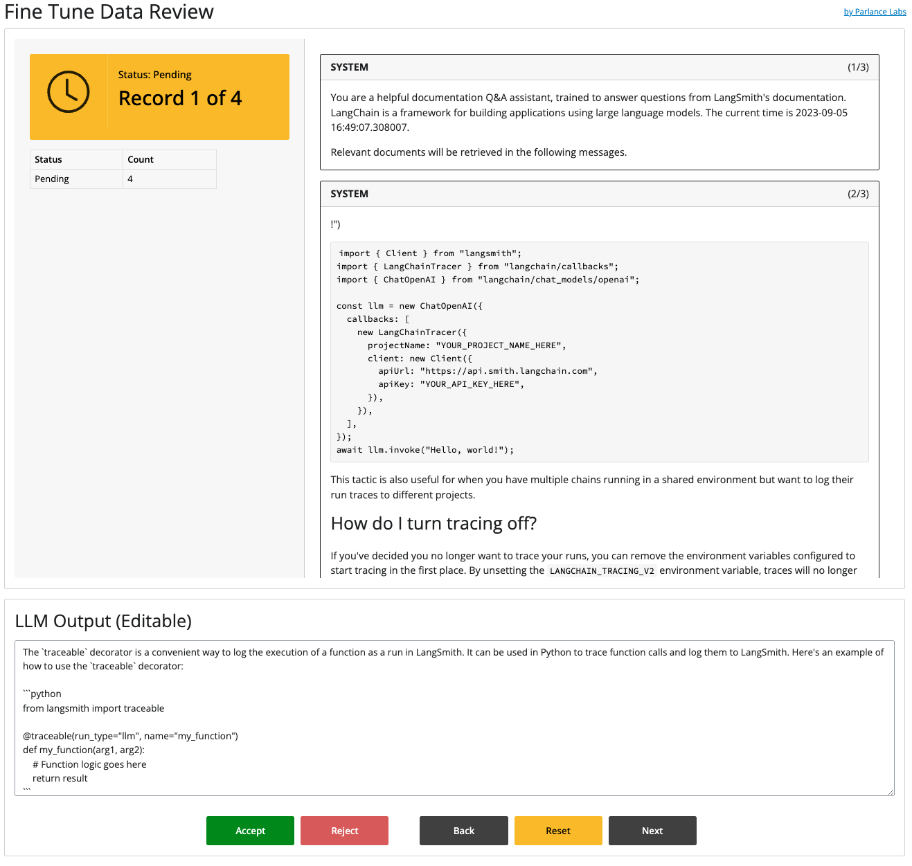

How to use langfree to build an app you can use to review LLM data.
The motivation for building your own review app is discussed on the homepage. This tutorial walks you through how you can build a minimal app using Shiny For Python.
Prerequisites
Runs logged to LangSmith that contain ChatOpenAI child runs.
Set the LANGCHAIN_API_KEY, LANGSMITH_PROJECT_ID and LANGCHAIN_ENDPOINT environment variables as described here.
Install langfree: pip install langfree
Clone this repo: git clone https://github.com/parlance-labs/langfree.git
1. Pull Data From Langsmith
If you have not logged runs to LangSmith
If you have not logged runs to LangSmith and want to see the app, you can skip to the next step and use the sample data in this repo, which is located in the nbs/tutorials/_data directory.
However, it is probably more interesting to use this with your own data.
First, we will pull data from LangSmith. There are many ways to do this, including using the langsmith client, which we illustrate below.
We will pull four specific run ids, parse the data and save it to a dataframe named sample_data.pkl that we will use as our backend “database” 1 for demo purposes. We initialize all records to have a status of Pending.
1from langsmith import Client2from langfree.chatrecord import ChatRecordSet# Change these run IDs to your runs3run_ids = ['a05e1668-57b4-4e4d-99d9-1f8578ddba5d','6b9f6c78-dbef-4352-8e4e-0b1777b59cf0','cebad2c1-a00b-43ee-86d0-1d42310e744a','2e1e7686-ae4b-45ab-bae0-0fb18749f1d2']4llm_data=ChatRecordSet.from_run_ids(run_ids)5llm_data_df = llm_data.to_pandas()6llm_data_df['status'] ='Pending'7llm_data_df.to_pickle('_data/sample_data.pkl')
1
The langsmith sdk offers the simplest way to retreive runs. However, there are additional utilities for retreiving runs provided in langfree.runs.
2
ChatRecordSet allows you to parse and extract key information from your langchain ChatOpenAI runs.
3
These are the run ids that we will pull from langsmith. You will have to pull your own run ids. Make sure that your runs have at least one child that is of type ChatOpenAI for this to work.
The status of each record is initialized to Pending which will changed by the front end app depending on user actions.
7
Finally, we save the data to _data/sample_data.pkl which will be read by the front end application.
2. Run the Shiny App Locally
Assuming you have completed the Prerequisites, go to the nbs/tutorials/ folder from the root of the langfree repo you cloned locally.
Execute Shiny by running:
shiny run app.py --reload

3. Read The Code & Modify It
The web application defined in app.py is around 150 lines of code, in python. This means you can easily hack it suit your own needs! Some resources that are helpful in understanding Shiny and this code:
Advanced: adapt the hotkeys from this Wordle example so that they work these buttons.
4. Deploy
Here are detailed guides for cloud hosting and self hosted deployments for Shiny apps. Some of the cloud hosting providers provide an easy way to add an authentication layer on top of your Shiny apps incase you want to make your apps private.
Footnotes
We recommend using a real database for production applications, but this allows you to get an understanding of how the system works.↩︎